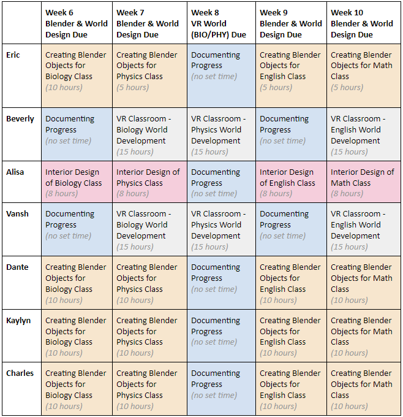
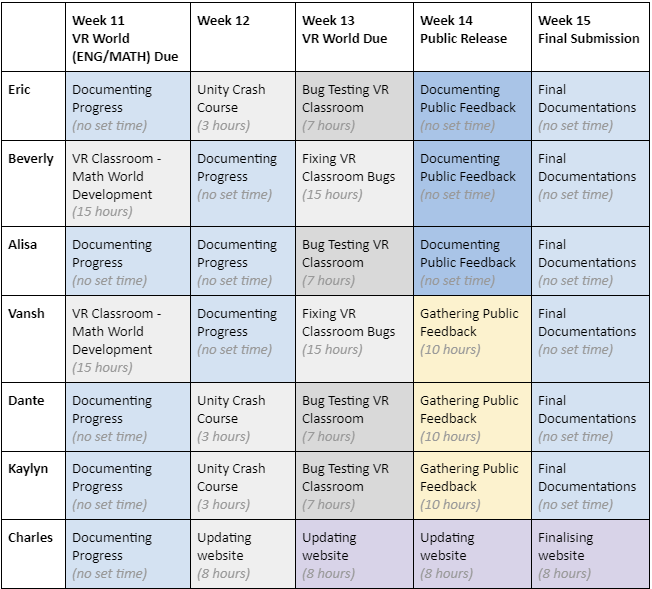

A general overview of the project the team is working on as well as the goals we aspire to reach
Aims and Goals (min two paragraphs)- Vansh
We saw that online learning was boring and not enjoyable during the course of the past year, so we wanted to make the online learning more interesting for everyone as well as easier on the teachers. We planned to make this as simple but packed full of features so that teachers can teach to the best of their ability as well as students learning to the best of their ability.
We wanted to make sure that we focused on the content we would teach them to show that anything can be taught such as human anatomy or physics or maths and english. We also wanted to show that anything is possible in this as it should be since teachers could want to do anything here. We also wanted to make sure that the classroom was as comfortable for everyone and as well as it being usable in a classroom situation so we decided to add a whiteboard which the teacher can write open as well as a lot of open space to allow the teacher to walk around as well as do demonstrations as well as adding a media player which lets teacher play videos on a big screen so they can still show videos or present their screen to the class.
Roles - Beverly & Dante
| World Designer | Alisa |
|---|---|
| World Developer | Beverly |
| Lesson Designer | Vansh |
| Object Designer | Everyone |
| Website Designer | Charles |
| Testing and Debugging | Everyone |
World Developer - Beverly Li Fa Mu Beverly has the most experience with using Unity and Blender so it would be most practical if she took the role of World Developer. She has had experience with avatar building and customisation, although she has not with world-building.
World Designer - Alisa Kvashko Alisa is the most artistic in our group, she enjoys design, architecture and is extremely creative. Her job as the World Designer is to design and outline a sketch of what the VR classroom will look like.
Website Designer - Yifan (Charles) Wang Yifan (Charles) has many technical skills that make it practical for him to be our Website Designer, with past experience with HTML and CSS. As our Website Designer, his role will be to design the layout, usability, and visual appearance of the website.
Lesson Designer - Vansh Shah Vansh came up with the main idea for an Anatomy class which the team ended up all agreeing on as our main focus on the project. His job as the main Lesson Designer is to manage and plan out how the lesson will be developed and what the lesson will compose of.
Object Designer - Everyone This role is split between the entire group as it involves the most work, creating objects from scratch in Blender for the Anatomy class. The role of the Object Designer is to create and design one of the organs from a basic anatomy diagram so it can be exported to Unity and then uploaded to VRChat.
Testing and Debugging - Everyone The job of Testing and Debugging is also distributed across the group, as it is important for everyone to be satisfied with the final product that is created. Having the Testing and Debugging role involves; searching for bugs and glitches, as well as analysing if there is anything that needs to be changed or fixed within the VR world.
Scope and Limits - Dante
The scopes and limits for our project are essentially there to keep world optimization to the fullest and decrease lag for a better overall experience of our educational virtual reality classroom. In order to keep optimization high and lag low, as a group we have to limit the number of polygons, quality of textures, and posters used for each object designed in Blender. This may reduce the quality of certain elements in the VR classroom however, it is a worthy sacrifice for the lag-free environment, since excessive latency will cause terrible motion sickness.
Our original plan was to get every member of the group to create and be in charge of developing their own lessons (English, art, physics, physical ed, Biology, etc), each of which would be able to be spawned on selecting which class you wanted. However, due to time circumstances, we could only be capable of completing a singular class, therefore eliminating the option to incorporate more features such as; more classroom lessons, objects, rooms, and activities. The effect of this compromise is that we wouldn't be able to create multiple classes and instead be focusing on one class that is decided by the group and split that class up to multiple components for everyone to work on. In addition, due to the limitations of VRChat SDK, it will not be possible to have ‘real-world’ physics included in the project, meaning it’ll be extremely difficult to construct something like an accurate simulation for a physics class. Therefore, as a group, we decided on a single class, with a single main activity, in this case, we agreed upon anatomy.
Another limitation is that pre-built pens are not included in VRChat’s SDK, furthermore, coding them is beyond our capability. Unfortunately, we will need to outsource them from ‘QV Pens’, which is a popular asset that is free to download via Booth, which is most likely what we are going to use to write and draw in the VR classroom.
Tools and Technologies - Charles
Blender 2.92.0, Unity 2018.4.20f1, VRChat, VRChat SDK2, C#
Optional tools: SketchUp, 3DS Max
Eric Lin Completed the Team Profile, Career Plans, Final Reflection as everyone else. Wrote the Motivation, Landscape, Lesson Concept for Biology, and World Designer and World Developer for the Skills and Jobs Required. Then finished summarising everyone’s reflection into the Group Reflection.
Beverly Li Fa Mu Completed Team Profile, Career Plans, Roles, Plans and Progress, Timeframe, Created an organ on Blender, Built a VR Classroom. Provided all members with individual feedback before submission
Dante Filatow I mainly worked on the Lungs (Blender) for the anatomy class, as well as my several paragraphs for Scopes and Limits, Risks, and my Physics lesson concept. I also completed the Team Profile, Career Plans, Group Roles, and the Group Reflection like everyone else.
Alisa Kvashko I was mainly involved in the designing process by creating finalized possible sketches for the classroom. Like everyone else, I completed a few paragraphs (group processes, career comparison etc) within the doc, made a heart (blender) for the classroom and completed reflections.
Kaylyn Tran I mainly worked towards creating the Bladder in Blender for the anatomy class, designed a lesson plan for English, as well as completing paragraphs for Group Process and Communication, Skills and Jobs, Career Plans and the Group Reflection.
Yifan (Charles) Wang I mainly worked on the pancreas (Blender) and website for anatomy. I also wrote my maths lesson concept, I also completed the Team Profile, Career Plans, Roles and the Group Reflection. I also uploaded the website to GitHub.
Vansh Shah I worked on the sketchup design, the eyes and made the eyes for the group as well as the anatomy lesson and the in depth lesson since it was mainly my idea. As well as the project overview topic paragraph and aim and goal.
Prior experience
Eric Lin: I have prior experience in C#.
Beverly Li Fa Mu: I have prior experience in Unity, Blender, VRChat, VRChat SDK, avatar modeling, character customisation, although I do not have any experience in using C#. In regards to avatar modeling, I have become accustomed to customizing avatars by importing various clothes and features to a premade model, merging and modifying bones, and exporting to unity for further customisation and optimisation using the SDK.
Dante Filatow: I have prior experience in; VRChat, Blender, Unity and SketchUp. I have past experience in using SketchUp, architecting and designing houses.
Alisa Kvashko: I’ve had prior experience with making floor plans of imaginary buildings and minimal designing knowledge from creating basic models in 3DS Max. However it's been a long time since being involved in these activities to have real output in this project.
Kaylyn Tran: I’ve had prior experience in Unity.
Yifan (Charles) Wang: I’ve had prior experience in Blender and VRchat.
Vansh Shah: I have experience in creating floor plans in sketchup.
Testing- Charles
This project is a VR classroom with many different functions and teaching scenarios, providing children with a rich and interesting opportunity for preschool education. When we test this project, we will test it by traveling around the world to see if there is any unreasonable 3D modeling, if there is a place to wear the model, and at the same time, we will test different buttons to see if there are any trigger errors. Or some buttons will become invalid. When we find that there is a problem in this world, we will report back to Beverly who is developing the world. We will discuss the solution to the problem together, and Beverly will solve the problem and upload it again. World is free to visit by everyone. Will leave contact details in the world so people and students are able to leave their feedback. Parents and children can come to visit this world and make suggestions to improve this world. The platforms for testing this project will be PC and VR. We may bring computers and VR equipment in various shopping malls like Westfield, and invite children and parents to experience the world we designed. We plan to invite a total of about 120,000 people to participate in the test. When we test for longer and longer, get fewer and fewer questions from feedback, and praise our world for being fun and educational, we succeed.
Timeframe (15 week plan, only first 4 weeks were executed)- Beverly


Risks- Dante
There are many risks associated with creating an educational virtual reality classroom that can cause delays and mistakes to be made throughout this project. Beginning with the extremely high learning curve with the chosen software used (Blender, Unity, etc), there is a lot to learn throughout our project and many steps we have to take to develop an overall basic understanding of how the software is used. In addition to this, the versatility of the programs we use to create our project idea makes it insanely difficult to choose which parts of the program are applicable to us. Also, due to the requirement of compatibility with VRChat, we are forced to use an older version of Unity which is less reliable and is relatively slow processing. In addition, you cannot upload content to VRChat unless your VRChat account has the right qualifications, such as being a certain rank of trust. To build trust, you must have a minimum number of active hours, receive friend requests, and not receive any reports/user blocks. Lastly, VRChat SDK has very limited tools, external plugins can be imported but are difficult to integrate without bugs and are often in different languages. The solutions to most of these risks can be found by watching tutorials and reading other instructional information online that can guide us through some step-by-step processes that can help us keep these risks to a minimum.
Group Process and Communications-Kaylyn
Communication is a very key part in projects. In order to ensure that everyone was on the same page at all times, we met at the 10:30am Monday workshops as well as an added online meeting every Tuesday through Microsoft Teams. These meetings were scheduled weekly and were also recorded. These meetings were specific and thorough as they were mainly used to discuss the assignment, delegate tasks and roles and clarify any misunderstandings. The Microsoft Teams meetings were also used as a way to help anyone who missed the main workshop meeting by briefly filling them in on the workshop meeting’s content. As well as this, everyone who attended the meetings took down meeting notes for the people who missed them. If we ran into a situation where a group member was not responding to the group’s communications, we contacted them directly through Discord or in their shared classes. For general communication we used Discord and created a server with different text channels for things like important links, project discussion, meeting notes and a general chat. The Discord server was utilised lots and was effective in bridging any gaps in our communication. .